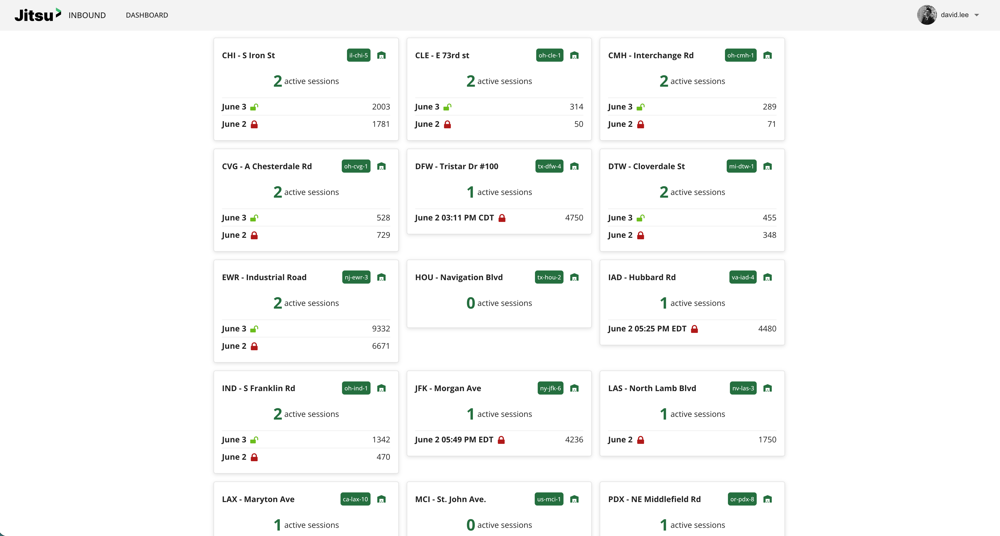
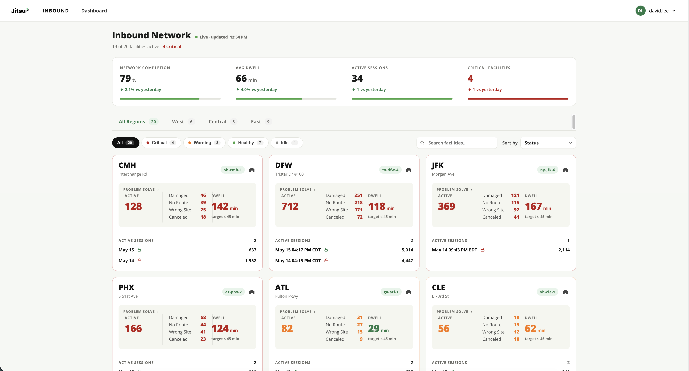
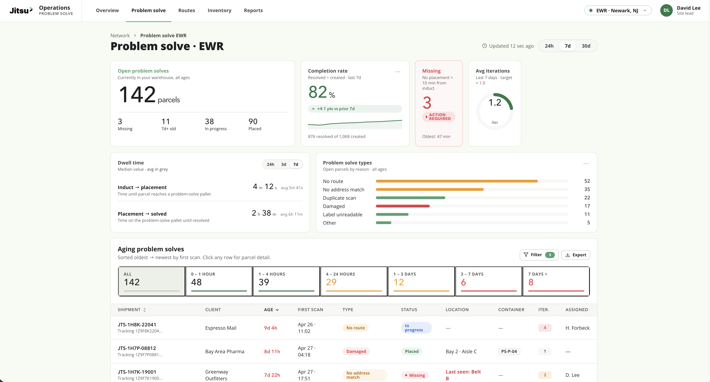

A real-time operations dashboard for warehouse management, streamlining inventory tracking, order fulfillment, and team coordination.
Warehouse supervisors were managing daily operations through a patchwork of spreadsheets, legacy software, and verbal check-ins. Critical data — inventory levels, incoming shipments, pending orders — lived in separate systems with no unified view.
The goal was to design a single, real-time dashboard that gave supervisors and floor managers immediate situational awareness without overwhelming them with noise.

The existing interface — data spread across multiple disconnected views with no unified status.
I conducted contextual interviews with six warehouse supervisors and shadowed two floor shifts to observe actual workflows. Key pain points surfaced quickly:
"I have to open four tabs just to know where we stand for the day. By the time I've done that, something else has already gone wrong."
— Warehouse Supervisor, User InterviewAffinity map from user interviews — grouped pain points into three themes: visibility, latency, and coordination.
I started with low-fidelity wireframes to test information hierarchy with actual supervisors before investing in visual polish. Three rounds of feedback shaped the final layout:
Mid-fidelity wireframes — tested with supervisors before moving to high-fidelity.
The dashboard is organized into three layers of information, matched to three time horizons supervisors care about:
A persistent top bar shows live counts for units picked, orders in queue, active alerts, and shift progress — the first thing supervisors read on arrival.
An interactive visual map of the warehouse floor shows throughput by zone with color-coded status (on-pace, behind, idle). Clicking a zone drills into picker-level detail.
A live-updating feed surfaces low-stock alerts and at-risk orders sorted by fulfillment deadline — enabling proactive intervention instead of reactive firefighting.


The dashboard was piloted across two warehouse sites over a 6-week period. Supervisors reported:
Reduction in morning status-compilation time
Faster identification of inventory discrepancies
Supervisor satisfaction score in post-pilot survey
Designing for operational contexts taught me that data density isn't the enemy — poor hierarchy is. The supervisors wanted everything at a glance; the design challenge was sequencing information so the most urgent thing was always the most visible thing.
If I were to continue this project, I'd explore a mobile-companion view for floor managers who aren't at a fixed station, and tighter integration with the existing WMS to reduce the manual data entry that still exists upstream.